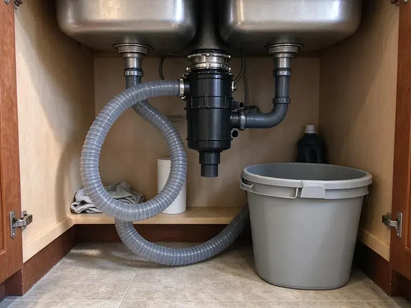
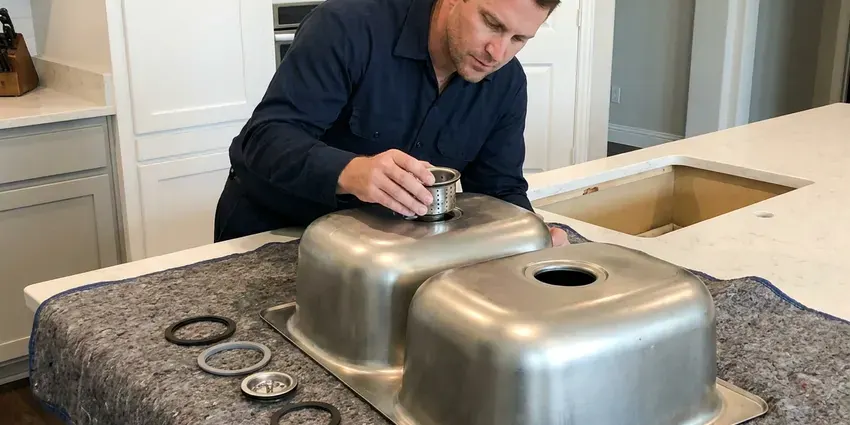
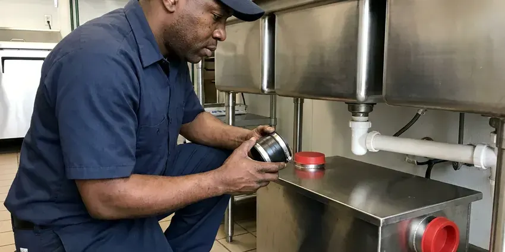
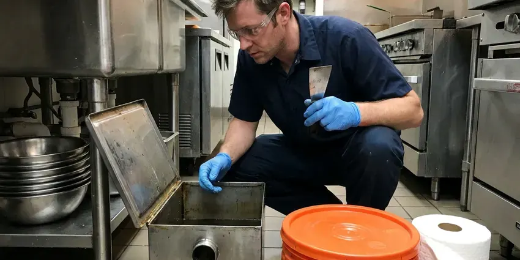
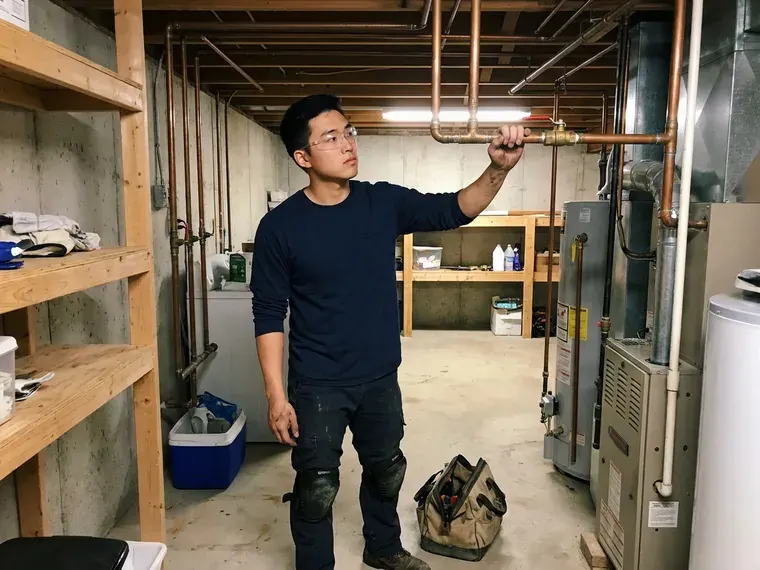
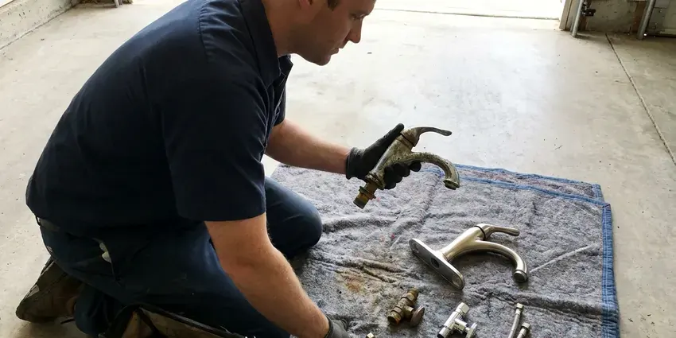

Kitchen Plumbing in Frankfort, KY
Keep your Frankfort, KY kitchen working the way it should with our professional plumbing services. We are ready for any sink, disposal, or drain problem.
- Same-Day Kitchen Plumbing Help
- InSinkErator Installs and Repairs
- Residential and Commercial Kitchens
- Prompt Service

Expert Kitchen Plumbing Services in Frankfort, KY.
Give us a call and a licensed plumber can usually be there the same day.
Complete Kitchen Plumbing Services for Homes and Businesses in Frankfort, KY
At BFK Plumbing, we focus on all aspects of kitchen plumbing for homes in Frankfort. From routine maintenance to emergency repairs, our experienced technicians are ready to handle any challenge quickly.
Our expertise includes:
- Kitchen sink and faucet installation
- Set kitchen sinks, faucets and dishwasher air gaps
- Installing and servicing all major garbage disposal brands.

Additional Kitchen Plumbing Services in Frankfort, KY
Our kitchen plumbing services in Frankfort, KY cover sinks, disposals, dishwashers, and grease traps so your kitchen stays clean, safe, and fully functional.


Kitchen Sink Installation near Frankfort



Professional grease trap installation, Frankfort

Grease Trap Cleaning near Frankfort

Customers
Why Choose BFK Plumbing for Kitchen Plumbing in Frankfort, KY?
Choosing BFK Plumbing means you are partnering with local plumbers who know Frankfort's plumbing systems inside and out. We focus on providing transparent service and dependable results that stand the test of time.
- One-Stop Service, Sinks, disposals, dishwashers and grease traps all handled by one team.
- Stocked Trucks, Disposals, traps, valves and supply lines are stocked on every truck.
- Quality Parts, We only use durable, reliable parts and materials to ensure long-lasting solutions for your kitchen.
Citywide Coverage
BFK Plumbing proudly serves every neighborhood of Frankfort and the surrounding communities for all kitchen plumbing needs. Whether you're close to downtown or on the outskirts, our team is ready to respond.
Experienced Team
Our plumbers also service commercial kitchens, including three-compartment sinks, floor sinks, hand sinks and grease interceptors. That experience helps restaurants stay compliant.
Safety-First Approach
We install dishwasher air gaps or high loops, proper traps and approved disposal connections to meet Kentucky plumbing code. Electrical connections for disposals are made safely with the power off.
Trusted Certified Frankfort Plumbing Services Professionals
At BFK Plumbing, we take pride in providing licensed, certified plumbing services throughout Frankfort, KY. Backed by recognized industry credentials, our experienced plumbers combine technical skill with genuine customer care. Whether it is repair, installation, or maintenance, we follow strict safety and quality standards to deliver lasting results you can trust.
Call Us Now PHCC Plumbing Contractor Recognition
PHCC Plumbing Contractor Recognition Better Business Bureau (BBB) Accreditation
Better Business Bureau (BBB) Accreditation Angi Certified Pro
Angi Certified ProReliable Kitchen Plumbing Solutions in Frankfort, KY
Grease Trap Installation & Cleaning in Frankfort
For commercial kitchens in Frankfort, proper grease trap management is crucial for preventing drain clogs and complying with health codes. BFK Plumbing focuses on grease trap installation, ensuring your system is correctly sized and installed to handle your business's demands. We also offer routine grease trap cleaning and maintenance services to keep your system running efficiently and prevent costly backups and fines. Regular service is essential for longevity and compliance.

Garbage Disposal Replacement in Frankfort, KY
When a garbage disposal reaches the end of its lifespan, replacement is often the most cost-effective solution. We provide quick and efficient garbage disposal replacement services, removing the old unit and installing a brand new one with minimal disruption. Our team will dispose of your old unit responsibly and make sure the new one is properly connected to your Frankfort, KY kitchen plumbing.
Grease Trap Cleaning in Frankfort
Regular grease trap cleaning is essential to prevent foul odors, backups, and costly plumbing emergencies. Our team offers complete grease trap cleaning and maintenance services, removing accumulated fats, oils, and grease (FOG). We help Frankfort businesses keep up with health codes and keep their drainage systems clear and functional.
Faucet Repair and Replacement in Frankfort
A dripping kitchen faucet can waste a surprising amount of water and money. BFK Plumbing offers complete faucet repair services, addressing leaks, low water pressure, and faulty handles. If a repair isn't cost-effective, we can help you choose and install a new, water-efficient faucet that complements your kitchen's style. We handle all major brands and types, including pull-down, single-handle, and touchless faucets for homes in Frankfort.
InSinkErator Installation & Service in Frankfort
As a leading brand, InSinkErator garbage disposals are known for their dependability and performance. BFK Plumbing provides professional InSinkErator installation, ensuring your new unit is correctly wired and plumbed for optimal function. We also offer repair and maintenance services for existing InSinkErator models in Frankfort, addressing common issues like motor hums, grinding noises, and leaks. Trust us to keep your InSinkErator running smoothly.
Kitchen Drain Clog Clearing in Frankfort, KY
Kitchen clogs usually come from grease, starches and coffee grounds building up in the trap and branch line. We clear them with drain machines sized for kitchen lines and can camera-inspect stubborn clogs. Chemical drain cleaners often make grease clogs worse, so we skip them. We also share simple habits to keep your kitchen drain clear.
Dishwasher and Ice Maker Hookups in Frankfort
New dishwashers need a hot water line, a drain to the disposal or tailpiece and an air gap or high loop. Refrigerator ice makers need a dedicated cold line with a shutoff. We install both with braided or copper lines and test for leaks. This stops the slow drips that damage cabinet bottoms and floors.

Emergency Kitchen Plumbing in Frankfort, KY
Kitchen plumbing emergencies, like burst pipes under the sink or a completely blocked main drain, need immediate attention. BFK Plumbing provides quick, reliable emergency kitchen plumbing services throughout Frankfort, KY. Our plumbers are equipped to diagnose and repair urgent issues quickly, limiting damage and restoring your kitchen's functionality. Don't hesitate to call us anytime you face a critical kitchen plumbing problem.
Kitchen Plumbing Near Me in Frankfort, KY
Our local presence means we can offer quick response times for kitchen plumbing emergencies and routine service calls throughout Frankfort. You can trust our team to provide knowledgeable and friendly service, ensuring your kitchen plumbing issues are resolved quickly and correctly.
When you search for 'kitchen plumbing near me' in Frankfort, KY, BFK Plumbing is your reliable local choice. We pride ourselves on prompt service and a solid understanding of the plumbing common across our area. Our technicians are always prepared to address your kitchen plumbing needs efficiently.
BFK Plumbing at a Glance
- Licensed and insured plumbers serving Frankfort, KY
- Same-day appointments and 24/7 emergency response
- Upfront, flat-rate pricing before work begins
- 4.8-star rated by 309+ Kentucky customers
Frankfort Map
Frankfort Information
- Population
- 28,285
- Area codes
- Local
- Service area
- Frankfort and communities within 40 miles
- Nearby
- Georgetown, Lexington, Nicholasville, Jeffersontown
Much of Kentucky sits on limestone, so water tends to run moderately hard to hard, leaving scale in water heaters and fixtures over time. Proper kitchen plumbing in Frankfort, KY keeps mineral scale, grease and aging drain lines from backing up your sink.
Expert Services
Trust our professionals for reliable BFK Plumbing solutions in Frankfort, KY.
Our Specialized Plumbing Services in Frankfort, KY
At BFK Plumbing, we provide a complete range of plumbing services across Frankfort, KY. From leak detection to full system installations, our team ensures fast, precise, and affordable service for both residential and commercial properties. Explore our core services below:



Plumbing Replacement in Frankfort


How Our Kitchen Plumbing Process Works in Frankfort, KY
Our process for addressing your kitchen plumbing needs in Frankfort is straightforward and designed for your convenience.
Request a Quote
Contact us at (502) 300-9896 or fill out our online form to schedule your kitchen plumbing service. We'll gather details about your issue and set up a convenient appointment time.
On-Site Assessment
A licensed plumber will arrive at your Frankfort home, diagnose the kitchen plumbing problem, and explain the necessary repairs or installation options. You'll receive a straightforward, upfront estimate.
Expert Service
Once you approve, our technician will perform the work carefully and efficiently, using quality parts and following all local plumbing codes. We ensure your kitchen plumbing is restored or upgraded properly.
Frequently Asked Questions About Kitchen Plumbing in Frankfort
The cost of kitchen plumbing repair in Frankfort varies a lot depending on the specific issue. Simple clog removals might range from $150 to $300, while a new garbage disposal installation could be $350 to $600 including the unit. Major pipe repairs or replacements could exceed $800. We always provide upfront pricing following an on-site assessment.
For minor repairs like replacing a faucet or clearing a simple clog, a permit is usually not required. However, significant alterations to your plumbing system, such as relocating drain lines, installing a new water heater, or making changes to the main waste lines, often require a permit from the city of Frankfort. We can advise you on permit requirements for your specific project.
If your garbage disposal is more than 8 to 10 years old, frequently jams, or requires expensive parts for repair, replacement is often the more cost-effective long-term solution. Newer models are also more energy-efficient and quieter.
For commercial kitchens in Frankfort, grease traps should usually be cleaned every 1 to 3 months, depending on the volume of use and local regulations. For residential use, if you have a grease trap, annual inspection and cleaning are usually enough.
We service and install all major brands of kitchen plumbing fixtures, including Moen, Delta, Kohler, American Standard, Pfister, and InSinkErator for garbage disposals. Our technicians are familiar with the specific parts and repair techniques for a wide range of manufacturers common in Frankfort, KY homes.
Watch for slow draining sinks, foul odors coming from the drain, gurgling sounds, standing water in the sink, leaks under the sink, or a garbage disposal that hums but doesn't grind. Any of these could indicate a plumbing issue that needs professional attention to prevent further damage.
Persistent kitchen sink clogs are often caused by a buildup of grease, food particles, soap scum, and hair in the drain line. Hard water can also contribute to mineral deposits that narrow pipes. Using chemical drain cleaners can sometimes make the problem worse or damage pipes.
Most food service businesses are required to have a grease trap or interceptor under local pretreatment rules. We can size and install one to fit your kitchen.
What People Are Saying About Our Plumbing Experts?
Patricia H.
We had a slab leak that two other companies could not find. BFK Plumbing located it in under an hour, explained our options, and the price matched the quote to the dollar.
Slab Leak Repair · Richmond, KYMark T.
When our office needed drain cleaning, BFK Plumbing provided quick, reliable service. The plumber arrived on time and made sure every drain flowed perfectly before leaving. Very satisfied.
Drain Cleaning · Jeffersontown, KY
Laura S.
I scheduled a water heater replacement, and the team made the process smooth and affordable. The new unit works perfectly, and they cleaned up after completing the job.
Water Heater Replacement · Richmond, KYEmily R.
I called BFK Plumbing for plumbing repair, and the technician was fast, polite, and thorough. They explained the problem clearly and fixed it the same day. I will definitely hire them again. Highly recommended!
Plumbing Repair · Frankfort, KY
James P.
Our commercial plumbing system had a leak under the sink, and BFK Plumbing handled it professionally. The plumbers arrived quickly and restored everything without disruption to our customers.
Commercial Plumbing · Georgetown, KYSofia M.
Two new toilets installed in one visit, no mess left behind, and the tech even adjusted a faucet he noticed was dripping. Fair pricing and really friendly.
Toilet Installation · Louisville, KY